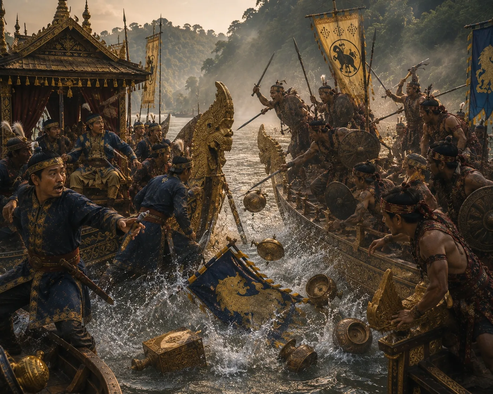

Betrayal and Assassination of King Sutuphaa
1376 · The coming of Sukaphaa

During a boat excursion on the Safrai river, the Chutia king treacherously assassinates Sutuphaa aboard the barge, triggering centuries of bitter warfare.
Sources have not yet been catalogued for this record.
People: Sutuphaa
Open this scene in the interactive archive · Follow this event on MAP